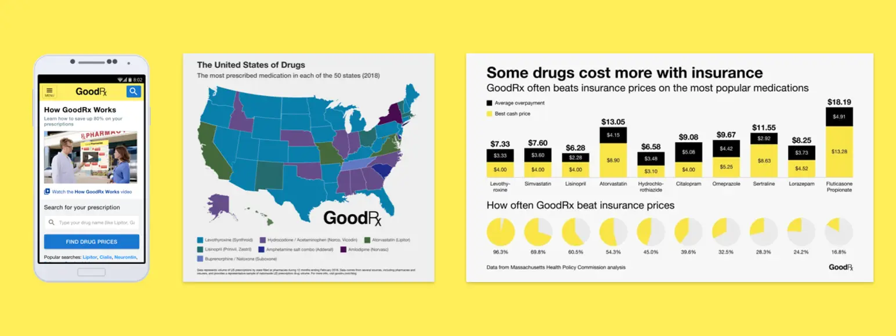
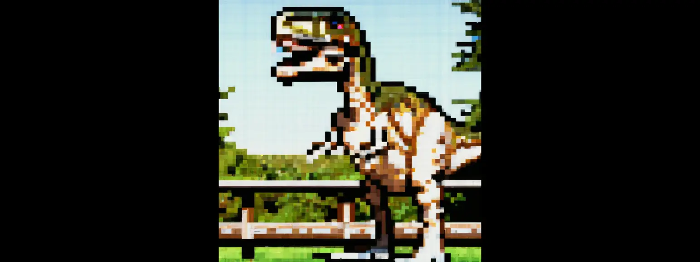

Product design engineer for AI-native products.
14+ years as a product designer, engineer, or something in-between.
I started my career at Amazon. Was an early employee at exited companies such as
TaskRabbit (IKEA), Clover Health (IPO), GoodRx (IPO),
doc.ai (Sharecare).
When I'm not building, you'll find me
🎲 playing board games,
🕺 dancing, or
🛼 roller skating.
I'm Chris's AI hiring guide. Ask by voice or text and I'll give you a fast read on fit, systems depth, and shipped outcomes. First, who's asking? I'll tailor what I show you.
Voice transcribed by ElevenLabs, answered by Claude (Anthropic). Nothing is stored.
The full story
I studied Human-Computer Interaction at UW and came out believing good design isn't
decoration. It's how you show people you actually thought about them. That took me through
Amazon, TaskRabbit, Clover Health and Iodine/GoodRx, usually as one of the first designers in
the building. Clinical tools, design systems, data visualizations.
Somewhere along the way I got tired of throwing designs over the wall, so I taught myself to
code: a year heads-down, then shipping every project I could get my hands on. I moved into a
software engineering role at Modus Create, then built PlaySesh end to end before co-founding
it. The fourteen years of design didn't get left behind. They're why my architecture has a
point of view.
In 2026 I co-founded y30 with Vijay Sivaji: voice AI for elder care, daily check-ins that
help older adults stay connected while giving caregivers and clinicians real signal between
appointments. I own the product, the UX and the voice stack.
Where I've built
A note on working with AI
I treat agents as tools, not autopilot. I incur comprehension debt deliberately,
in prototypes, never in core or safety paths. The judgment is mine; the speed is the tool's.
Agents don't have the judgment to tell a subtlety from a deliberate decision, and
their context isn't persistent, so they have to be guided by what you already know. I check what an
agent actually has in context, interview it and let it interview me, test the result against what I
expected rather than what it claims, and codify anything I catch twice.
At y30 I built a five-stage eval flywheel: session capture, auto-eval, failure
harvest, STT variants, CI regression detection. Then the automation was producing pull requests and
issues nobody had a ritual for reviewing, which is worse than no automation because it creates false
confidence. So I wrote the operating workflow too: fifteen minutes of triage every Monday, P0s
alerting to Slack the same day.
Work
y30
2026 – now
Co-founder, CPTO
Voice AI for elders and support for longitudinal caregiving.
Stage
Bootstrapped. Vijay and I are paying out of pocket for the costs and developing it. Deployed and actively hardening
Team
Vijay Sivaji (CEO) and me. Vijay owns fundraising, customer discovery, recruiting testers, sales, and building relationships with subject matter experts
A session is a voice call, on a phone or anything with a browser and a
microphone. The user starts it, or a caregiver starts it with them. Inside it they can just talk or
play a game, and move between the two, and hang up whenever. Caregivers and clinicians get the
summary. The hardest part wasn't getting the AI to do more. It was deciding what it shouldn't get
to decide.
I let the model run the game sequence at first. After eight prompt revisions, guards and a
watchdog, it still started the round only about 70% of the time. I moved that sequence into
code. Conversation stayed open-ended; the part that had to happen in order stopped being a
request.
Tradeoff3× slower, on purposePeople would rather talk to someone who listens to them than someone who waits for their turn to speak.
AI covers the edges I didn't anticipate. So I decide up front what the model gets
to own and what has to be guaranteed, instead of finding the line at 70%.
Transfers toDeciding which parts of a product a model is allowed to run.
Conversation design
Pacing. Waits longer for elders before deciding they're done, to make sure it's listening.
Interruptions. Handles them, and never talks over the user.
Confirmation. Never corrects a false memory. Some phrases are banned to prevent tone-deaf responses, enforced by a guard that checks every response before it's spoken.
Safety. Emergency and crisis responses are recognized before any AI model is called.
Tangents. Waits a few exchanges before offering to go back to the original topic, and never pressures.
Memory. Remembers the last 20 sessions, and stops surfacing a follow-up if it goes unresolved after a few.
We can't claim product market fit, we can only claim interest. We're actively
getting feedback from subject matter experts. We know it's engaging, but we haven't proven
clinical data and value yet. We decided to not log elder phone sessions to build their trust
and to focus on whether they would even bother to interact with y30. They are a vulnerable
population and they get taken advantage of, so we were very sensitive to the elders we talked
to. One of our primary motivations is building proper trust.
I started it solo, trying to solve loneliness through gaming: help people find
someone to play with. Interviews killed that idea. Then at Blue Startups I talked to thirty-odd game
designers and developers, most days for months, and found the real problem. Teams could not get from
an idea to something playable, or get enough playtests to know if it was any good. The canvas was our
MVP, collaborative by default, because presence was the thing that had to work.
It was running on tldraw. When that couldn't carry real
multiplayer I replaced it with an operation-based sync engine on Durable Objects. It took about a
week. What it bought was total control of the canvas; what it cost was that we now maintained all of
it ourselves. The point was never to own unusual infrastructure. It was to make a remote team feel
like it was in the same room.
Adoption6,220 authorized accountsDiscord reported approximately 6,220 authorized accounts and 138 server installs as of August 1, 2026. Separately, PostHog measured a peak of 1,043 monthly active users in January 2026. All organic.
Every direction has a reversal cost. I weigh technical, product and design paths by
which one I can afford to be wrong about, then measure progress to know whether to keep going.
Transfers toBuy versus build, when the thing you'd buy can't do the one thing that matters.
A career-development and learning platform teaching job skills with real software.
Stage
Series A
Team
3–5 engineers, 1 PM, 1 designer (me)
Owned
Product design · Design system · Research · PRD · Front-end
Stack
React · Storybook · Design tokens · Ant Design
In week one I wrote down the question: how do you roll out design changes
while courses are live?
I committed to a direction before I understood
course-author impact. Every structural change created re-work for a team I didn’t manage,
so the design became backward compatible by default. That cost me changes I wanted and
narrowed the window to the gaps between cohorts.
Result60–80 hours savedShipped without forcing a rewrite of the existing course content. I never measured whether the redesign worked, and the case study says so.
Be more in the understanding side before jumping to the design, and evaluate
course-author impact sooner.
Transfers toChanging something people are already using.
“Chris is a great designer to collaborate with. His empathy, creativity and focus make him an excellent thought partner, truly focused on bringing your idea to life.”
Consumer healthcare: prescription drug information, then drug pricing.
Stage
Profitable, PE-backed, pre-IPO
Team
6-person special-projects team in SF
Owned
Product design · Front-end · Data visualization · Research · Conversion
Stack
D3 · Experimentation · Healthcare
The Iodine acquisition closed while I was interviewing, so I came in
officially as a GoodRx employee working two products. Iodine was the experimenting layer. GoodRx was
the scale, and where I got pulled in to ship.
It came out of feedback, and out of working with pharmacists. So we built Ask a
Pharmacist.
When we shipped it, engagement was much higher than we anticipated. We shut it down anyway,
because we didn't have the resources to respond inside a guaranteed 48 hours. Trust is the absolute
priority, and if you can't support it, it's better to shut it down than run a service that fails people.
Iodine.com2% → 5%Coupon-flow conversion. Iodine.com won the Webby for Best Health Website.
GoodRx Research+10% mobile, +25% desktopReferenced in the New York Times and used in federal drug-pricing debates.
Engagement validates the idea, not our ability to serve it. Before I ship now I
ask what it commits us to operationally, and whether we can measure and grow at a pace we can
sustain.
Transfers toShutting down a feature rather than running it badly.

“He isn’t afraid to voice and fight for what he believes is right, but, more importantly, he is willing to listen to others’ opinions and concede when appropriate. Even when a feature wasn’t successful from a business standpoint, he would make sure that both he and the rest of the team learned from it.”
Marc Mendiola · software engineer, Iodine and GoodRx
“An innate ability to understand user needs and experiment with software design until the product matches the purpose. He is literate in code, engineers love working with him, and is also deeply attuned to the needs of ordinary people.”
Thomas Goetz · his manager, Chief of Research, GoodRx
A Medicare Advantage insurer using data to direct clinical care.
Stage
About 30 people, founder-funded, months before the Series A
Team
4–5 engineers, 1 PM
Owned
Clinical tools · Field research · Brand · Front-end · Marketing site
Stack
Healthcare · CSS · Clinical workflow
The brief from the CPO was "fix the home visit experience." That was all of it. I
spent a week in New Jersey shadowing nurse practitioners on live visits.
They had no set flow, no fixed place they started, and every night they spent about two hours
pre-filling paper by hand. So it could not be a wizard. It needed to be flexible with a suggested
order, like TurboTax.
Result~7–8× ROIOn visit-related revenue. Nurse practitioners stopped losing two hours a night to paper forms.
Not just the end user, but the people who deliver the service and represent the
company to them. At Clover the nurse practitioner was both.
Transfers toDesigning for how people actually work, not the order you assumed.
“Chris completed each phase of the designs by himself, from user research to visual composition. He introduced the usage of new tools that made going from design to code far easier than I’ve experienced in the past.”
Dan Lee · product engineer, Clover Health
“He is not shy to push when he thinks something is important, but at the same time he is flexible and compromises when engineering isn’t able to implement all aspects of his work. He always presented multiple design options and made sure to get input from all teams involved: engineering, product and operations.”
Saba Naqvi · worked with him at Clover Health, now Senior Engineering Manager at Rakuten
Advising founders on product and design in the earliest stage, where the question is usually what to build rather than how.
Modus Create
2023 – 2024
Software Engineer
A product consultancy, delivering for client engineering teams.
Stage
Consultancy
Team
6 engineers
Owned
Front-end · Client delivery · Atlassian ecosystem
Stack
React · TypeScript · Atlassian Forge
The chapter where I stopped handing designs over. Production front-end on client engagements,
which is where the second half of the job got proven rather than claimed. I started PlaySesh
while finishing here, so the two overlap by a couple of months.
A marketplace connecting tabletop players with paid game masters.
Stage
Seed, a16z · YC company
Team
7 people, 1 designer (me)
Owned
Product design · Two-sided marketplace · Research · Front-end
Stack
Marketplace · Consumer · Design systems
Two-sided by nature: the player picking a game has almost nothing in common with the GM running one as a business, and the same surfaces had to serve both.
“Chris collaborates exceptionally well. He loves communication and hearing others’ ideas. He is receptive to feedback and develops strong relationships with the members of his team.”
Nate Tucker · his manager, StartPlaying
doc.ai
Sharecare 2021
2021
Lead Product Designer
An enterprise AI platform for healthcare, running clinical studies.
Stage
Series A · acquired mid-tenure
Team
5–6 people, 1 designer (me)
Owned
Clinical studies product · Research · Design system · Front-end
Stack
Healthcare · React · Clinical data
The nearest thing I did to y30 before y30. Health data, real participants, and a product where
being wrong has a cost.
TaskRabbit
IKEA 2017
2014 – 2015
Product Designer
A two-sided marketplace for local help, mid-rebuild.
Taskers were absorbing a company change from bidding to direct hire, and the Tasker
app shipped painful on top of it.
Taskers were passing on tasks rather than committing, because they wanted to see everything
available before choosing. So we rebuilt around what they already relied on: a schedule view,
matching the calendar apps they lived in. The client experience can be perfect and the service
still fails, because the rest of it depends on the Tasker.
ResultNPS −5 → mid-50sTasker side, through the rebrand and the move to direct hire. Client NPS reached the high-40s.
People absorbing a change they didn't ask for have no appetite for a second one. So
I build on what they already use instead of asking them to learn something new.
Transfers toBuilding on what people already use instead of teaching them something new.
“He always brought an intensely thoughtful and high EQ approach to every single project he worked on. You can tell he cares deeply about every project, big and small.”
Melissa McAlpine · worked with him at TaskRabbit, now Director of Product, Samsung Digital Health
I interned on the Prime team, where subscribing was buried in a workflow that made no sense. I
designed a way to buy it in your cart and to gift it, which became Prime gifting. Then I was hired
full time onto Amazon Music.
“The Amazon Prime team is incredibly demanding in regards to complexity and level of polish and thought required in its products. We literally dropped Christopher into the deep end right away and he took to everything quickly.”
Christopher McGarry · his manager, Amazon Prime
“Chris continuously pushed our design team to stand up for great design in the face of
constant pressure from date-driven Product managers and eager Directors. He knows how to ask
tough questions and never stops fighting for the end user.”
A daily browser microgame gauntlet, built for a role that closed mid-build. I shipped it
anyway. 33 keyframes, a beat-clock conductor so a zoom costs zero playable time, and a WebAudio
scheduler with ducking.
Voice UX · Web Speech API · ElevenLabs TTS · real-time state from speech
A voice-first noir detective game. Inspect the scene, question witnesses, and crack the case
by calling out contradictions out loud. Hands-on STT, TTS, and voice-driven interaction design,
which is the same problem space as y30.
Evolve, Die, Repeat
Game Design, Engineer · 2025
Stack
Lua · Love2D
Unlocked
Lua · Love2D · test-driven game dev · telemetry-driven iteration · cross-platform CI/CD
A 2D side-scrolling roguelite in Love2D. Swap body parts mid-run to evolve: fins to swim,
wings to fly, claws to climb, stingers to shoot venom.

Zodiacus
Game Design, Print Production · 2023
Stack
Game design · Playtesting · Manufacturing
Unlocked
Systems design · physical prototyping · playtesting methodology
A board game built on the Chinese zodiac, started during the pandemic in response to rising
anti-Asian hate. I wrote the rulebook and most of the design; a friend wrote the story. Prototyped
physically and playtested twice.
Rat with Wings
Game Design · 2022
Stack
Unity
Unlocked
Unity · C# · game engine fundamentals · shipping a playable web build
A weekend project to teach myself Unity. Evenings and one weekend, start to playable.
I design and engineer the same product, research to ship. Design intent survives all the way to production. I use AI as an engineer, not a shortcut. I’m at my best on hard, ambiguous problems where judgment decides the outcome, not headcount.
A small, high-output team, or a senior IC pocket inside a larger one, where I can go deep and stay. The work is the scoreboard.
Products that put AI in front of real users, where trust, oversight and safety are the hard part. Healthcare, AI-native systems, developer tools, complex SaaS.
Direct collaboration across product, design and engineering, with people who sweat the details.
The direction I’m heading: safe, eval-driven AI in high-stakes domains. Guardrails, evals and oversight as product architecture, not an afterthought.
Open toSenior / Lead Design EngineerProduct Design EngineerAI Product Engineer
BasedRemote US from HonoluluWest Coast hoursQuarterly Bay Area / Seattle
Let’s work together.
Selectively open to senior IC roles. Warm intros preferred.
Talk to people who've built with me.Vijay Sivaji and Brett Groshong are glad to get on
a call and tell you what it's really like. Just ask.